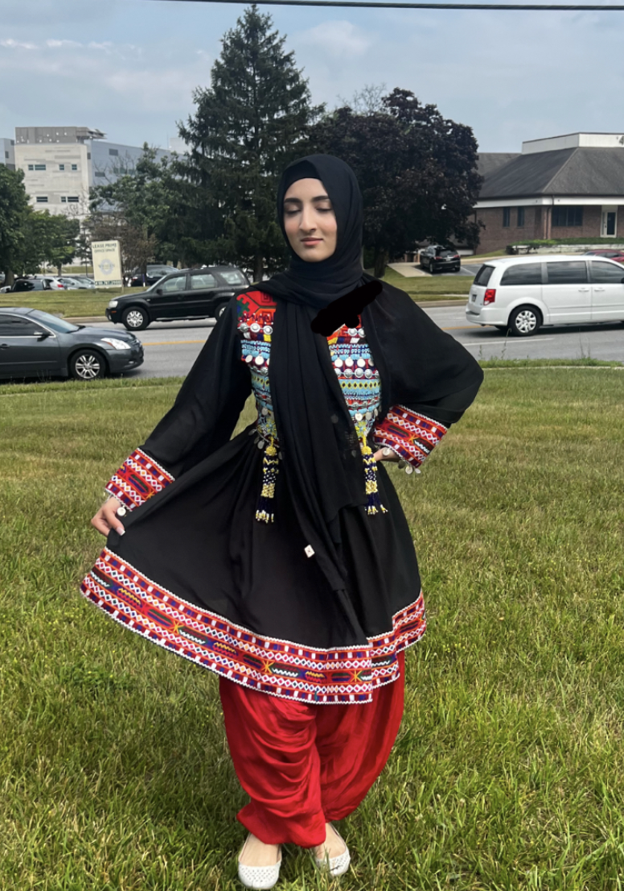
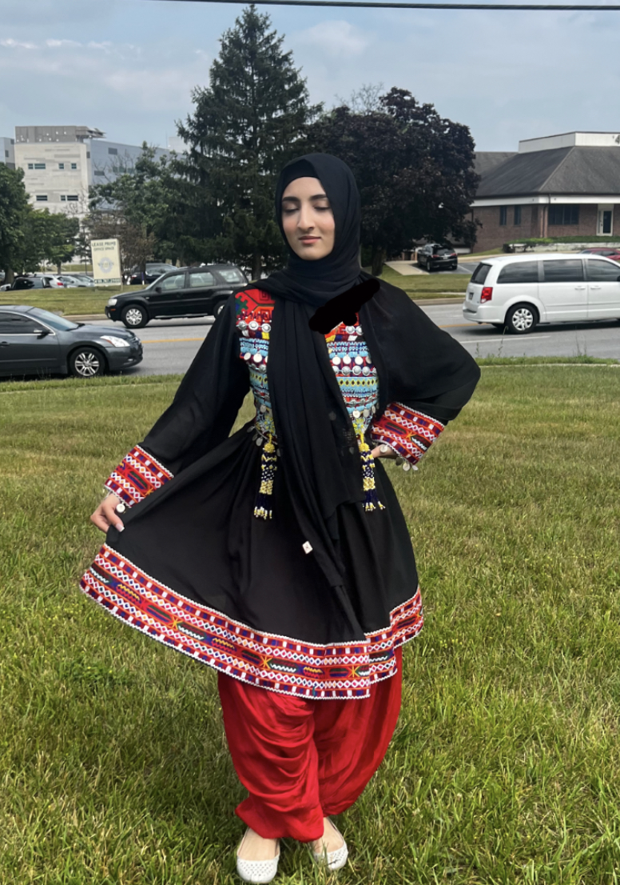

Afghanistan and The Culture:
Afghanistan is a country with a rich cultural heritage that is shaped by its different ethnic groups and Islamic roots. The country boasts a diverse range of languages, arts, and food, which reflects its cultural mix. One of the main features of Afghan culture is hospitality, and guests are always welcomed with open arms and plenty of food. Islam plays a significant role in the daily life of Afghan people.
What being Afghan means to me:
As an Afghan, being Afghan holds a deep meaning. It entails carrying the legacy of a rich culture and an unyielding spirit. It's about cherishing our close-knit bonds within our families and communities, steeped in traditions that have shaped us for generations. It also involves navigating the complexities of our history with strength, while always looking towards a brighter future. Embracing diversity and facing challenges head-on, being Afghan fills me with immense pride and shapes every step of my journey with determination.
Struggles Growing up as a Afghan-American:
Growing up as an Afghan-American can be challenging as it involves navigating between two cultures. Balancing traditional Afghan values with American norms can be difficult, and dealing with stereotypes about Afghanistan only adds to the struggle. I often feel like I don't fully belong in either culture, which can be emotionally draining, especially since I'm distant from my homeland due to conflict. However, being Afghan-American also offers a unique perspective and a chance to celebrate both cultures.
Explore Further: Links to Websites for More Information
Timeline of Afghanistan Afghanistan's CulturePlease feel free to ask any questions you may have in the space provided below.
 
